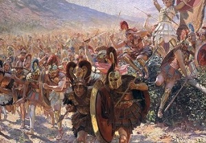
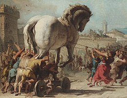

Er zijn veel oorlogen geweest waar de Grieken een rol hadden. Een beroemd voorbeeld is de Trojaanse oorlog. De reden waarom de Grieken oorlog voerden, was omdat ze vaak dat deden om macht te tonen en vaak was er een oorlog door de goden. Ik ga vertellen over de Trojaanse oorlog. De Trojaanse oorlog was de grootste oorlog die ooit is gevoerd in de oude Griekse tijd. Het was een oorlog tussen de bewoners van de stad Troje en de Grieken die de stad Troje wilden veroveren. De mythe is gebaseerd is op ware gebeurtenissen in het oude Griekenland rond het jaar 1180 voor Christus. De oorlog begon toen alle griekse goden, behalve de griekse godin van de twist, Eris, was uitgenodigd voor een bruiloft. Ze bedacht een list. Ze had op een gouden appel geschreven 'voor de mooiste' en gaf het toen aan de goden. Zeus moest het aan de mooiste geven, maar kon niet kiezen tussen Hera, Athene en Aphrodite. Hij besloot de godinnen naar Paris te sturen, een herder in Troje, en hij zei dan wie de mooiste was. Natuurlijk zeiden de godinnen dat die iets zou krijgen als die de appel aan diegene gaf. Athene zou wijsheid geven, Hera zou hem roem geven en Aphrodite zou hem de mooiste vrouw geven. Uiteindelijk koos hij voor Aphrodite. Hij ging naar Helena, de mooiste vrouw, en koning Menelaos en stal van hem zijn vrouw, Helena. Koning Menelaos was boos, dus ging met duizenden schepen naar Troje. Hij had veel halfgoden, en helden bij zich. De oorlog duurde erg lang.
Het einde van de oorlog
Na tien jaar was er nog niet iets gebeurd, dus besloot Apollo om giftige pijlen te schieten naar de Grieken, omdat ze de dochter van een priester, die Apollo eert, hadden ontvoerd. Ze wilden de dochter teruggeven, maar Achilles wilde dat niet, dus hij stopte met vechten. Toch deed hij later mee, omdat zijn vriend was vermoord. Achilles doodde iedereen , maar ging dood door een pijl in zijn hiel. Paris ging ook dood door een pijl. De strijd duurde nu nog heel lang, maar toen bleek dat de Grieken niet meer konden winnen, dus kwam Odysseus met een list. Ze maakten een groot houten paard waar ze Grieken in verstopten en gaven het als overwinningscadeau aan Troje. Een priester van Troje wist dat, maar werd door Poseidon vermoord. Ze gingen met het paard naar Troje en hadden in de nacht iedereen gedood die er was. Dit verhaal is door Homerus geschreven in de Ilias. Hij heeft ook een verhaal van Odysseus na de oorlog geschreven in de Odyssee.